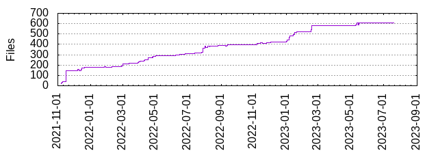

Files
- Total files
- 608
- Total lines
- 21068
- Average file size
- 1252.72 bytes

| Extension | Files (%) | Lines (%) | Lines/file |
|---|
| 280 (46.05%) | 658 (3.12%) | 2 |
| bat | 1 (0.16%) | 118 (0.56%) | 118 |
| bazel | 54 (8.88%) | 3491 (16.57%) | 64 |
| bazelrc | 40 (6.58%) | 1312 (6.23%) | 32 |
| bin | 2 (0.33%) | 0 (0.00%) | 0 |
| bzl | 88 (14.47%) | 9889 (46.94%) | 112 |
| bzlmod | 4 (0.66%) | 0 (0.00%) | 0 |
| csv | 1 (0.16%) | 1 (0.00%) | 1 |
| expected | 2 (0.33%) | 4 (0.02%) | 2 |
| go | 8 (1.32%) | 825 (3.92%) | 103 |
| jq | 1 (0.16%) | 5 (0.02%) | 5 |
| js | 14 (2.30%) | 14 (0.07%) | 1 |
| json | 9 (1.48%) | 74 (0.35%) | 8 |
| md | 34 (5.59%) | 2997 (14.23%) | 88 |
| mod | 1 (0.16%) | 8 (0.04%) | 8 |
| properties | 1 (0.16%) | 6 (0.03%) | 6 |
| py | 1 (0.16%) | 26 (0.12%) | 26 |
| sh | 24 (3.95%) | 824 (3.91%) | 34 |
| sum | 1 (0.16%) | 8 (0.04%) | 8 |
| tar | 1 (0.16%) | 39 (0.19%) | 39 |
| tmpl | 2 (0.33%) | 8 (0.04%) | 4 |
| tsv | 1 (0.16%) | 1 (0.00%) | 1 |
| txt | 13 (2.14%) | 12 (0.06%) | 0 |
| vm | 2 (0.33%) | 86 (0.41%) | 43 |
| whl | 1 (0.16%) | 27 (0.13%) | 27 |
| xml | 2 (0.33%) | 11 (0.05%) | 5 |
| yaml | 15 (2.47%) | 363 (1.72%) | 24 |
| yml | 4 (0.66%) | 89 (0.42%) | 22 |
| yq | 1 (0.16%) | 4 (0.02%) | 4 |